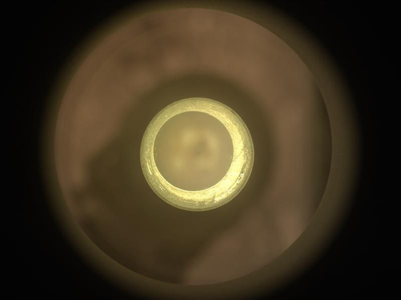
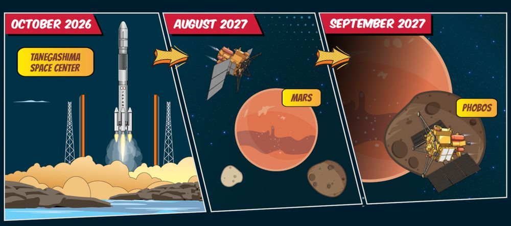
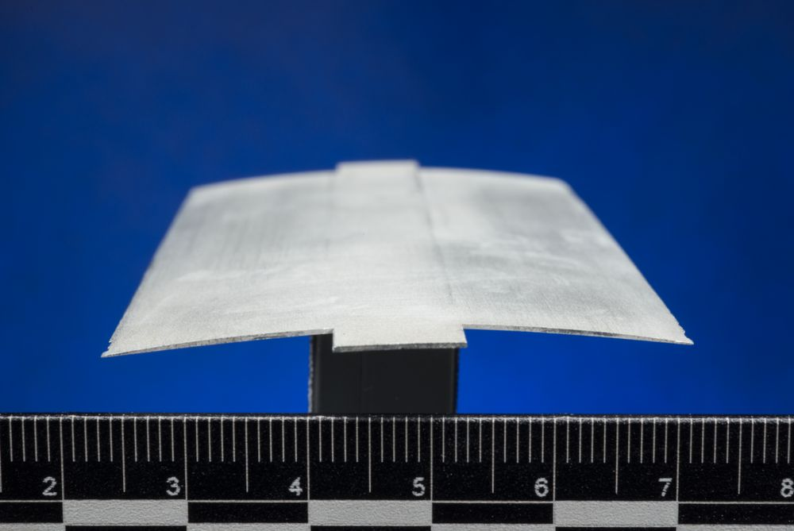
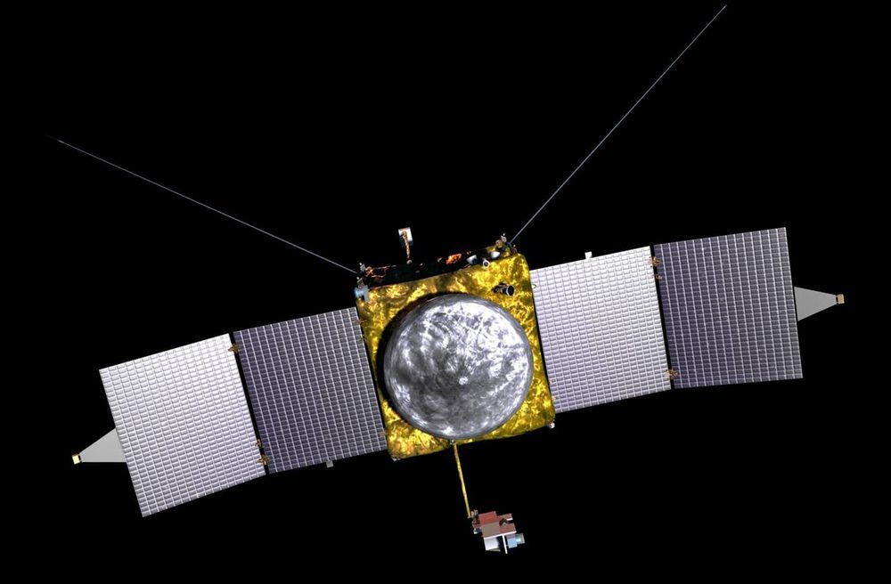

Mars Tracker
Summary
Where things stand on 30 October 2026. Two NASA rovers are working on the surface: Curiosity and Perseverance. Perseverance set a new distance record on 11 October (45.22 km, past the 45.16 km that NASA's Opportunity rover drove), and on 24 October it drilled its first new rock sample in more than a year, "Singita", which the team says may be among the oldest rocks exposed on Mars. Curiosity is getting ready to drill a new hole at a rock called "Nazca". Japan's Martian Moons eXploration probe (MMX) launched on 20 October and is on its way; JAXA says its critical first days in space are done and the spacecraft is healthy. Arrival at Mars is August 2027 per ESA, NASA and NASASpaceFlight; JAXA's press kit gives only "fiscal year 2027" (April 2027 to March 2028). NASA published (26 October) the first measurements on Mars of the very fine dust that future crews would have to deal with. NASA's four-person, yearlong Mars simulation on Earth (CHAPEA) ends on 31 October. New on 29 October: a NASA-funded study in the journal Science dates a meteorite from Mars found in the Sahara, "Teghaza 001", to more than 4.1 billion years ago, making it one of the oldest pieces of Mars known.
Budget and Congress: a stopgap funding law keeps NASA at its 2026 level of $24.4 billion through 11 December 2026. The White House asked for $18.8 billion for 2027, and the House committee bill kept NASA flat at $24.4 billion. Mars Sample Return (bringing Perseverance's rock tubes to Earth) was cancelled and has no replacement plan. Two bid protests (formal challenges to a contract award) are now open at the Government Accountability Office (GAO) against NASA's Mars Telecommunications Network award to Blue Origin; the second was filed on 23 October.
Plans from companies and agencies are goals, not funded schedules, unless the entry says otherwise. They are marked [aspirational]. Facts I could not match to a second source are marked [unconfirmed]. A sol is one Martian day, about 24 hours 39 minutes.
Today and recent, newest first
Nothing new today on these, so only their checked dates change: the Perseverance team blog (newest post still "Tinga's Tale", 26 October) and the Curiosity team blog (newest still sols 5043-5049, 28 October; no new drill hole reported), ESA (newest Mars items are the MMX stories of 13 and 20 October), JAXA (newest release still 21 October; MMX blog 26 October), CNSA in English and CGTN (no new Mars item; CGTN's newest is MMX on 20 October), the UAE Space Agency and the Mohammed bin Rashid Space Centre on X (the center's 29 October posts are about an agreement with the University of Sharjah, not Hope), ISRO (its posts are about tonight's 30 October navigation-satellite launch, not Mars), SpaceX (newest update 8 October, not Mars) and Blue Origin on X (posts about an apprenticeship program and a podcast, not Mars), the two GAO protest dockets (both still open, decisions due 21 December 2026 and 1 February 2027), SpacePolicyOnline (no Congress action; Congress is out until after the 3 November elections), the Planetary Society (an advocacy group; newest Mars item still Singita, 28 October), the ESCAPADE pages (still "November 2026" for the Mars departure burn and "fall of 2026"), AMSAT-DL (amateur radio group) and Daniel Estévez's blog (newest post is about an aircraft-signal receiver, not Mars). The 27 October rumor that China may split Tianwen-3 (its Mars sample return) and delay the lander to 2030 is still only repeated on X; no agency or named outlet has confirmed it [unconfirmed]. No low-cost Mars mission solicitation seen on NASA's Mars Future Plan page yet [unconfirmed].
A rose-colored meteorite (a rock that fell to Earth from space) found in the Sahara in Mali in 2022, named Teghaza 001, formed on Mars more than 4.1 billion years ago, according to a study published 29 October in the journal Science. That makes it one of the three oldest of the roughly 435 Martian meteorites known; the others are ALH84001, found in Antarctica in 1984, which is of similar age, and "Black Beauty". Water altered the rock about 4.1 billion years ago, so it formed even earlier, and the team says this supports the idea that early Mars had liquid water and conditions that could have suited life, though it does not show that life existed. It is a single kind of coarse igneous rock (gabbro, which cooled slowly from molten rock below the surface), unlike Black Beauty, which is a jumble of many rock pieces. Its minerals best match Mars's ancient southern highlands as seen from orbit by NASA's Mars Reconnaissance Orbiter (MRO); NASA shows 13 possible source spots on a MOLA map (an elevation map made by a laser altimeter on the old Mars Global Surveyor orbiter). The lead author is Yang Liu of JPL; the University of New Mexico first spotted that it came from Mars from its oxygen isotopes (different forms of the oxygen atom).
Nothing new today on these, so only their checked dates change: NASA and JPL news releases (newest Mars items are the 27 October CHAPEA advisory and the 26 October dust story), the Perseverance team blog (newest post still "Tinga's Tale", 26 October), ESA (newest Mars Express items 7 and 14 October), JAXA (newest release 21 October; MMX blog 26 October), CNSA and Xinhua in English and CGTN (no new Mars item; CGTN's newest is MMX on 20 October), the UAE Space Agency and the Mohammed bin Rashid Space Centre on X (posts about the space economy and astronaut training, not Hope), ISRO (its posts are about the 30 October navigation-satellite launch, not Mars), SpaceX and Blue Origin news pages, the two GAO protest dockets (both still open, decisions due 21 December 2026 and 1 February 2027), Congress (in recess until after the 3 November elections, per SpacePolicyOnline), the ESCAPADE pages (still "November 2026" and "fall of 2026"), AMSAT-DL (amateur radio group; no new Mars tracking post) and Daniel Estévez's blog. No low-cost Mars mission solicitation seen on NASA's Mars Future Plan page yet [unconfirmed].
For the first time in more than a year, Perseverance has collected a rock sample. On 24 October it drilled a core called "Singita" in the "Lac de Charmes" region outside the western rim of Jezero crater. The news was first given by Katie Stack Morgan, the mission's project scientist, at the American Astronomical Society's planetary sciences meeting (the Division for Planetary Sciences, DPS). She said it "could be among the oldest rocks exposed on the surface of Mars". Jezero itself formed about 3.9 billion years ago, and Singita, a crystalline igneous rock (one that cooled from molten rock), could be several hundred million years older. It was probably buried about 1 km deep before an impact threw it up to the surface; it may even be a piece of the impact that made the giant Isidis basin. Only lab work on Earth could give its exact age. The rock was so hard that the first try failed, and the rover switched to a less-used drill bit. Stack Morgan said the rover will stay in the area to try for two more samples, one of them from a younger igneous rock.

After the "Basque Lakes" drill campaign, Curiosity drove back near the "Chiu Chiu" block and is preparing to drill at "Nazca", a neighboring block packed with disc- and needle-shaped shapes that may be crystals, or pseudomorphs (minerals that have replaced earlier crystals but kept their shape). The plan for the week: a drill "preload" test (pressing the drill on the rock without drilling, to check it is safe), a 3D model of Nazca's surface from five overlapping close-up camera (MAHLI) pictures, laser shots by ChemCam (an instrument that zaps rock with a laser and reads the light to learn its chemistry) on targets "Toucan", Nazca and the finely layered "Condor", dust brushing and an X-ray chemistry reading (APXS) on Nazca, and night pictures of a full Phobos to estimate the size of particles in high, thin carbon-dioxide clouds; the twilight cloud season is starting. The plan was made on 16 October; the post's picture is from sol 5048 (18 October 2026).
Nothing new today on these, so only their checked dates change: Perseverance and Curiosity team blogs (no post since 26 and 19 October), ESA (no Mars news since 20 October), CNSA and Xinhua in English (no Mars item), the UAE Space Agency (its 27 October posts are about the space economy, not Hope), ISRO (no Mars item), SpaceX and Blue Origin news pages (Blue Origin's latest Mars item is the 19 October MMX sampler launch), the two GAO protest dockets (both still open, decisions due 21 December 2026 and 1 February 2027), and Congress (in recess until after the 3 November elections, per SpacePolicyOnline's 25 October weekly list). No low-cost Mars mission solicitation seen yet [unconfirmed].
Rumor, not an announcement: two X accounts say China may split its Tianwen-3 Mars sample-return mission. The orbiter-and-return spacecraft would still launch in November 2028 to scout landing sites from orbit, but the lander and the small rocket that would lift samples off Mars (the Mars Ascent Vehicle) are behind schedule and could wait for the next launch window two years later. That would move the samples' arrival on Earth from about 2031 to about 2033. The original poster says an unnamed industry contact told them the plan was issued only weeks ago and is still being discussed. China has said nothing about this [unconfirmed]. China's last public plan (Xinhua, April 2026) was launch about 2028 and samples back about 2031.
A team at the state-funded Deep Space Exploration Laboratory in Hefei, China, reports a lab catalyst (a material that speeds up a chemical reaction) that turns carbon dioxide, which makes up more than 95 percent of Mars's air, plus hydrogen into methanol, a liquid fuel. This is the kind of ISRU (making fuel or air from what is already on Mars) that future crews would need. The paper's abstract says the best version, called MOF-808-NaCu (copper and sodium held in a porous framework), made 245 grams of methanol per kilogram of catalyst per hour, about 11 times the 22 grams of the same material without sodium, and made less carbon monoxide waste. The paper was published online in China's Journal of Deep Space Exploration.
Four volunteers who have lived for more than a year in a pretend Mars base on Earth come out on Saturday, 31 October, after 378 days. The mission is CHAPEA (Crew Health and Performance Exploration Analog), its second run; it began on 19 October 2025 in a 3D-printed, 1,700-square-foot building at NASA's Johnson Space Center in Houston. The crew did simulated spacewalks, grew plants and fixed the habitat while living with message delays, limited supplies and isolation, the way a real Mars crew would. NASA will stream the exit live from 3 p.m. EDT (21:00 Israel time). NASA now says the data will mainly help its Moon missions (Artemis and a Moon base).
Scholar's Mars exploration course is published: how Mars has been explored, a map set, where each mission stands, and what is planned. Its facts were checked on 27 October 2026 and carry its own labels, [unconfirmed] and [aspirational], which this page keeps. This tracker starts from the course and re-checked its time-sensitive items against NASA, JAXA, GAO, ESA, UAE and Xinhua pages today. Where the course and a primary source differ, this page follows the primary source and says so (for example: the Xinhua interview with Tianwen-3's chief scientist is dated 3 September, not 4 September; and a second GAO protest exists).
Low-cost Mars mission: the 2027 request (AAS summary of NASA's document) says a solicitation for a low-cost Mars mission "will be released in October 2026", aiming at a 2030 launch with a $220 million lifecycle cost, not counting the rocket. As of 27 October I did not find it released on NASA's Mars pages: not yet seen [unconfirmed]. The 2030 launch is a goal until funded [aspirational]. NASA's April slides name launch windows in fiscal years 2029, 2031 and 2033 as considerations.
Posts that scientists are using instruments on Perseverance to study the dust on Mars and how it could harm future crews and equipment (the post's subject is the dust study NASA also lists on the Perseverance mission page).
Over 1,645 sols (Martian days), Perseverance measured how much very fine dust settled on small squares of spacesuit material it carries: Teflon and Vectran (a strong woven fiber) on the calibration target of its SHERLOC instrument (an ultraviolet scanner that looks for minerals and carbon compounds), and Teflon and basalt glass on the target of PIXL (an X-ray instrument that reads the chemistry of rocks). It is the first measurement on Mars itself of fine dust (smaller than 2.5 micrometers, far thinner than a hair) and ultrafine dust (about 100 nanometers). Grains averaged about 2 micrometers on some swatches and only 100 to 300 nanometers on others; static electricity decides which grains stick to which material. The dust is rich in iron and sulfur, has extra phosphorus and signs of calcium sulfate, and Mars dust also carries perchlorates (salts that are toxic to people). The study, led by Scott VanBommel of Washington University in St. Louis, was published on 27 October in PNAS (Proceedings of the National Academy of Sciences). Quoted: Lindsay Hays, acting director of NASA's Planetary Science Division, and Katie Stack Morgan, the project scientist at JPL.
Describes a target named "Tinga" at the southern border of "Idubi", an outcrop made mostly of olivine (an igneous mineral). At Tinga the lower rock is likely a breccia (rock made of broken, angular pieces, often formed by an impact), and higher dark rocks may be part of the Idubi olivine unit or breccia that was "baked" by contact with it. The team says more study is needed. The image is from sol 2009 (14 October 2026). The post is dated 26 October on NASA's site; the author's note says it was written 19 October.
A second bid protest was filed on 23 October by Rocket Lab USA against solicitation 80GSFC26R0011, the same solicitation number as the first protest. Status: open. GAO's decision date shown is 1 February 2027. The docket does not say what the second protest argues, so I do not know how it differs from the first.
Reports that ESA's Mars Express, at Mars since 2003, could support MMX when it arrives in 2027, with joint observations and imaging of the landing site. Says Mars Express's latest extension runs to 2029 and, quoting a former team member, is "definitely the last" (the same person notes the first "last ever extension" was around 2007). Says JAXA reported on 21 October that MMX's initial critical operations, including solar array deployment, were complete. Says MMX plans to collect about 10 g from Phobos, with return in 2031, and that ESA's Trace Gas Orbiter, not Mars Express, will be the main relay for the Rosalind Franklin rover.
JAXA says MMX finished its first, risky days in space: the solar panels unfolded, the spacecraft holds itself steady on all three axes, and the medium-gain antenna (a mid-size dish for talking to Earth) was released from its launch locks. The spacecraft is healthy. Next come checks of each system, then the long cruise to Mars. Seen 28 October (we had it only through The Register before). On 26 October JAXA's MMX blog posted a team member's account of hearing the first signal after launch; it has no new status.

Verma (post dated 12 October, published 21 October) says the odometer read 45.22 km (28.10 miles) on sol 2006 and explains the driving upgrades behind it: a higher tilt limit (24 degrees), smaller required belly clearance (20 cm), new braking and wheel-slip software, and an on-board position-finding tool that works like GPS on a world without it. About 200 meters short of the record on sol 1947, the team stayed to study outcrops instead of driving on. She says the team is exploring using generative AI to help plan paths.
Missed by earlier runs; seen 28 October. NASA engineers, with Imperial College London and Japan's Nagoya University, designed a thinner, sharper rotor blade for Mars's thin air, called roamx-0201. Computer studies say it could stretch a single helicopter flight from Ingenuity's 0.7 km to as much as 18.7 km while carrying instruments. Wind-tunnel tests backed up the gains. NASA says its SkyFall mission, a trio of Mars helicopters, is "scheduled for launch in 2028" and uses Ingenuity-style blades; the new design is for missions after that. The paper was published on 22 September in an American Institute of Aeronautics and Astronautics journal.

JAXA announces that MMX launched on H3 flight No. 10 at 04:41:03 Japan time on 20 October 2026 (19:41 UTC on 19 October) from the Tanegashima Space Center. The rocket flew as planned; the spacecraft separated 71 minutes 13 seconds after liftoff and was placed in its planned orbit. The release gives no Mars arrival date.
Photo (copyrighted, not copied): JAXA Digital Archives, MMX launch photo (JAXA allows use only by application, so it is linked, not copied)
Says a new Mars year, number 39, began at the end of September and it is now autumn in Gale crater. The team finished a drill campaign at "Basque Lakes" (including one more gas-analysis experiment by the SAM instrument) and planned to drive back toward the "Chiu Chiu" region, where it had seen crystal forms. The first high-altitude twilight clouds of the season showed up. Earth planning date was 9 October; the image is from sol 5037 (7 October 2026).
On Starship's tenth birthday: SpaceX's Starship has not flown to Mars; this year's Mars window (the roughly 26-month period when Earth and Mars line up for a launch) is closing with no Starship Mars launch; the next window is late 2028 to early 2029. Says Starship Flight 14 on 28 September reached orbit and that Flights 15 and 16 have no confirmed dates.
NASA says Perseverance passed the record for total distance driven on another world, held by NASA's Opportunity rover: 45.22 km (28.10 miles) on sol 2006 (11 October 2026) against Opportunity's 45.16 km (28.06 miles); that day's drive was 91.31 meters. It took Perseverance about five and a half years; Opportunity took almost 15. NASA also says the mission's first extension began in October and runs to roughly the end of 2028, and that the rover is heading toward "Idubi" and then south toward a block of uplifted ancient crust called Rainbow Falls. NASA says Perseverance has collected 29 rock and regolith samples (CNN counts 33 tubes, which also includes dust and air samples).
Reports that Mars Sample Return was cancelled with no clear alternative. Quotes a July NASA statement: NASA is "exploring a range of potential return options" that could be simpler and cheaper, "including possible commercial or international contributions". Quotes NASA Administrator Jared Isaacman (30 August): "There's no question we're going to go get samples", robot or astronaut, with no time frame. Says Perseverance has filled 33 tubes (NASA's own count of rock and regolith samples is 29), and that China's Tianwen-3 aims to return its own samples in 2031.
Rocket Lab filed a bid protest against NASA's award of the Mars Telecommunications Network contract. GAO's page shows status open and a decision due 21 December 2026.
Hou says the Tianwen-3 Mars sample-return mission is at the engineering prototype stage, that its landing site is expected to be settled by the end of 2026, and that China will build a planetary protection laboratory for the returned samples. [aspirational: no funded launch date is stated in this interview.]
Reports the stopgap spending law (continuing resolution, or CR) was signed on 2 September (Public Law 119-103). It holds NASA at its 2026 level of $24.4 billion through 11 December 2026. The White House requested $18.8 billion for 2027. Midterm elections are 3 November.
NASA announces it selected Blue Origin to provide the Mars Telecommunications Network (MTN), a relay satellite service for future Mars missions. NASA's April slides give the program as about $700 million. Blue Origin is a company with its own interest in the result.
Curiosity reached 1 kilometer of elevation gain on its climb up Mount Sharp (26 August, per NASA's mission page and the course's source link).
Posted "Tianwen-1 safe mode telemetry", about radio signals he tracks from China's Tianwen-1 orbiter. Per Scholar's course and his blog: a gap in signal in December 2025, the signal returned, and a safe-mode event on 2 August 2026, after which telemetry looked normal. He is an independent amateur.
Reports that the House committee's bill for 2027 keeps NASA flat at $24.4 billion, with Planetary Science at $2.5 billion and Mars Exploration at $300 million (the group's tables). The group says the bill is "silent" on Mars Sample Return. As far as I read, the full House has not passed it. Congress, not the White House request, sets the final amounts. Next: midterm elections on 3 November; the stopgap law runs out on 11 December.
White House request for 2027: NASA $18.829 billion, 23% below the $24.438 billion enacted for 2026; Planetary Science $1.876 billion (down 26%); Mars Exploration $248.3 million; Perseverance operations $38.0 million, down from $87.5 million in the 2024 plan (AAS says NASA is "reassessing objectives for the mission"); Mars Future Missions $110 million. AAS reads Mars Odyssey, the U.S. part of Mars Express and the U.S. contribution to ESA's Rosalind Franklin rover as missions the request does not mention, meaning proposed endings carried over from the 2026 request; the House committee report protects some other science missions, and I did not confirm it names these three.
Mission status board
On the surface
| Mission | Status | Source date | Links |
|---|---|---|---|
| Curiosity (NASA) | Working. Finished drilling at Basque Lakes (42nd drill hole) and is preparing to drill at "Nazca", a block with possible crystal shapes (NASA blog, 28 Oct). Climbing Mount Sharp; 1 km of elevation gain reached 26 Aug 2026. FY2027 request keeps it funded at $38.0M. NASA's raw-image feed shows new pictures through sol 5058 (29 Oct). | 30 Oct 2026 (raw images); blog 28 Oct | blog, 28 Oct · mission page |
| Perseverance (NASA) | Working. World-record 45.22 km driven by sol 2006 (11 Oct); NASA's traverse file shows 45.25 km by sol 2022 (28 Oct). Exploring Lac de Charmes, outside Jezero's western rim, near the Idubi outcrop. Drilled a new sample, "Singita", on 24 Oct, its first in more than a year (Planetary Society, from the project scientist's talk; no NASA story yet). NASA counted 29 rock and regolith samples before that, none returned; first mission extension began in October, to about end of 2028. FY2027 request would cut operations from $87.5M (2024) to $38.0M. New on 26 Oct: NASA published its dust study from swatches of spacesuit material the rover carries. | 30 Oct 2026 (raw images to sol 2023; traverse file sol 2022; blog 26 Oct) | Singita, Planetary Society · blog · Tinga's Tale · dust release, 26 Oct |
| Zhurong (China, CNSA) | Asleep since May 2022; it did not wake up. China has not said the mission is over. Zhang Rongqiao, the mission's chief designer, has said dust was the most likely cause (per the Planetary Society and marsprogress.com). | Not re-checked at CNSA today; secondary source 6 Oct 2026 [unconfirmed] | Planetary Society · marsprogress.com |
In orbit
| Mission | Status | Source date | Links |
|---|---|---|---|
| Mars Reconnaissance Orbiter, MRO (NASA) | Operating, "nominal, Extended Mission 5" (NASA, April 2026). FY2027 request funds it at $26.0M. | Apr 2026 (NASA MEPAG slides) | NASA MEPAG slides |
| Mars Odyssey (NASA) | Operating, "nominal" (NASA, April 2026). Not named in the FY2027 request, which AAS (the American Astronomical Society) reads as another proposal to end it. | Apr 2026 | NASA MEPAG slides · AAS budget summary |
| ExoMars Trace Gas Orbiter, TGO (ESA/Roscosmos program, run by ESA) | Operating, and the main relay for ESA's Rosalind Franklin rover (The Register, 22 Oct). FY2027 request continues U.S. support at $2.0M (AAS). ESA's "facts and figures" page (15 Oct) says TGO entered Mars orbit on 19 Oct 2016; it gives no end date. | 30 Oct 2026 (ESA page of 15 Oct) | ESA: TGO facts and figures · AAS budget summary · The Register |
| Mars Express (ESA) | At Mars since 2003 (The Register). ESA lists it among missions extended in June 2026 (no end date in the text). The Register (22 Oct) says the latest extension runs to 2029 and calls it the last [secondary source; not confirmed on an ESA page]. The course had said funding was secure only to end of 2026, with 2029 proposed. | 22 Oct 2026 | ESA, 11 Jun 2026 · The Register |
| Hope / Emirates Mars Mission (UAE) | Operating. The UAE Space Agency announced on 17 Feb 2026 that the mission is extended, through 2028. Course: more than 10 terabytes of data returned (The National; WAM; not re-checked for the figure). | 17 Feb 2026 | WAM release |
| Tianwen-1 orbiter (China, CNSA) | Operating. CNSA said in April 2026 it had kept surveying Mars (reported via Xinhua on marsprogress.com). Amateur tracker Daniel Estévez saw a radio gap in Dec 2025, the signal return, and a safe-mode event on 2 Aug 2026 [amateur sourced; China has said little]. | 7 Aug 2026 (amateur); 6 Oct 2026 (secondary) | Estévez blog · "Where is Tianwen-1?" · marsprogress.com |
On the way
| Mission | Status | Source date | Links |
|---|---|---|---|
| MMX, Martian Moons eXploration (JAXA, Japan) | Launched 20 Oct 2026 (04:41 Japan time). Healthy; first critical operations done (solar panels out, steady pointing, antenna released), JAXA 21 Oct; now checking its systems before the cruise. Reaches Mars: August 2027 per ESA, NASA and NASASpaceFlight; JAXA's press kit says fiscal year 2027. Phobos sample: no earlier than December 2028 per NASA and NASASpaceFlight, 2030 per ESA [unconfirmed]. Leaves Mars FY2030; samples back on Earth in 2031 (JAXA press kit, NASA, ESA). | 30 Oct 2026 (JAXA 21 and 26 Oct) | JAXA release, 21 Oct · JAXA press kit (Japanese) · NASA advisory, 8 Oct · JAXA release · ESA · NASASpaceFlight |
| ESCAPADE, two orbiters (NASA and UC Berkeley) | Launched 13 Nov 2025 on Blue Origin's New Glenn. The Mars departure burn is in November 2026 and arrival is September 2027 per the Berkeley mission-design page. NASA's own page says only "fall of 2026" for the Earth flyby. FY2027 request: $4.5M. | 30 Oct 2026 | Berkeley mission design · NASA mission page |
Ended
| Mission | Status | Source date | Links |
|---|---|---|---|
| MAVEN (NASA) | Ended. Last heard 6 Dec 2025; NASA declared the mission ended 3 June 2026. An anomaly review board found it unrecoverable. The root cause is still being investigated, with a final report expected later this year (per Scholar's course; not re-read today). | 3 Jun 2026 | NASA release 26-047 |
 | |||
| InSight (NASA lander) | Ended 21 Dec 2022 after recording 1,319 marsquakes (per Scholar's course). | course | per Scholar's course |
| Ingenuity (NASA helicopter) | Ended 25 Jan 2024 after 72 flights (per Scholar's course). | course | per Scholar's course |
| Mangalyaan-1, Mars Orbiter Mission (India, ISRO) | Silent; end of mission per the course [unconfirmed here]. | course | per Scholar's course |
Perseverance counter
Area: "Lac de Charmes", outside the western rim of Jezero crater, near "Idubi", an olivine-rich outcrop; the rover drilled the "Singita" sample here on 24 October and plans to try for two more (Planetary Society).
Today's sol: about 2024 (NASA's raw-image feed lists images from sol 2023 taken on 29 October 2026 (close-up science camera pictures, not a drive); 30 October is about one sol later (our own arithmetic, one sol is about 1.0275 Earth days))
Curiosity
- Latest NASA blog: sols 5043 to 5049, posted 28 October 2026 by Lucy Lim (NASA Goddard). After Basque Lakes the rover went back near "Chiu Chiu" and is preparing to drill "Nazca", a block packed with disc- and needle-shaped possible crystals. It also planned night pictures of Phobos to study high, thin clouds; the twilight cloud season is starting. The plan is from 16 October, so the drilling may already have happened. · blog, 28 Oct
- The previous blog (sols 5036 to 5042, 19 October, Alex Innanen): drill campaign at "Basque Lakes" finished; it is autumn in Gale crater; a new Mars year (number 39) began at the end of September. · blog, 19 Oct
- NASA's raw-image feed has pictures through sol 5058, taken on 29 October 2026, so 30 October is about sol 5059 (our own arithmetic). NASA's pages that I opened give no odometer for 29 October, so none is shown here.
- Climbing Mount Sharp, the mound in Gale crater: 1 kilometer of elevation gain reached on 26 August 2026, per NASA's mission page, which also counts 42 drill holes. · mission page
- Distance: NASA's 12 October record release says Curiosity has driven more than 38.07 km (23.65 miles). Money: the FY2027 request puts Curiosity (the Mars Science Laboratory line) at $38.0M, from $40.0M in the 2024 plan (AAS summary of NASA's request); Congress has not set the final 2027 number. · AAS summary
Plans and company claims
- SpaceX (company) [aspirational]: Says Starship cargo flights to the Martian surface start no earlier than 2028 and prices cargo at $100 million per metric ton. In February 2026 Elon Musk said the company would for now give priority to a city on the Moon (The Guardian, as cited in the course; I did not open it). Flight 14 reached orbit on 28 September (Space.com). · SpaceX Mars page · Space.com, Andrew Jones
- NASA SR-1 Freedom [aspirational]: NASA's April slides say a nuclear-electric spacecraft, SR-1 Freedom, targets Mars in 2028 and would release "SkyFall" helicopters (a NASA article of 20 Oct says SkyFall is "scheduled for launch in 2028"). The House committee bill supports it, and the Planetary Society repeats NASA's plan to fly it "before the end of 2028". Funding is not final. · NASA MEPAG slides · Planetary Society
- China (CNSA): Tianwen-3, Mars sample return [aspirational]: Launch about 2028, samples back about 2031. Eight candidate landing zones; final site expected by end of 2026; at the engineering prototype stage (Xinhua, April and September 2026). Two launches, one lander with a drill and a helicopter (CNN, citing the mission team's 2025 paper). A rumor on X (27 Oct) says the lander may slip two years, pushing samples to about 2033 [unconfirmed; China has said nothing]. · Xinhua, 24 Apr 2026 · Xinhua, 3 Sep 2026
- ESA with NASA: Rosalind Franklin rover (ExoMars) [aspirational]: NASA began implementation of its part in April 2026. NASA's April slides say "scheduled to launch in 2028"; the course says no earlier than late 2028, with a late-2030 landing reported [unconfirmed]. The 2027 U.S. budget request does not mention the U.S. contribution. · NASA ROSA blog, 16 Apr 2026 · NASA MEPAG slides
- India (ISRO): Mangalyaan-2 [aspirational]: A lander-and-orbiter follow-up to India's first Mars mission. The only on-record statement I opened: Nilesh Desai, a director at ISRO, told ANI on 8 October 2025 that work has begun and that it "will be completed by 2028-2030", and that the trip takes 10 months. No official launch date or approved budget found [unconfirmed]. · Economic Times / ANI, 8 Oct 2025
- Crewed Mars missions (any agency) [aspirational]: No agency has an approved, funded, dated crewed mission to Mars as of 30 October 2026 that I could find. NASA calls Mars a "horizon goal" after the Moon (course, citing NASA release 26-025, which I did not open). Treat any crewed-Mars date, from SpaceX or anyone, as a goal. · Scholar's course
- NASA: Mars Future Missions and the low-cost mission [aspirational]: A $110 million technology and low-cost-mission line, a planned solicitation aimed at a 2030 launch, and a payload program. See the 3 April item in the news feed. · NASA Mars Future Plan page
Upcoming dates
| When | What |
|---|---|
| 31 Oct 2026 | CHAPEA Mission 2 crew leaves NASA's simulated Mars habitat in Houston after 378 days; live on NASA Johnson's YouTube from 3 p.m. EDT (21:00 Israel time). |
| 3 Nov 2026 | U.S. midterm elections; Congress makes little progress before this (SpacePolicyOnline). |
| Nov 2026 | ESCAPADE leaves Earth's neighborhood for Mars (burn in November per Berkeley's mission-design page; NASA says only "fall 2026"). Exact date not published as of 30 Oct [unconfirmed]. |
| Nov 2026 | Starship Flights 15 and 16: slipped to mid or late November per Space.com; no confirmed dates. [aspirational] |
| 11 Dec 2026 | The stopgap spending law (P.L. 119-103) runs out. |
| 21 Dec 2026 | GAO decision due on the first MTN protest (B-424825.1). |
| End of 2026 | Tianwen-3 landing site expected to be chosen (Xinhua). [aspirational] |
| 1 Feb 2027 | Date shown on GAO's page for the second MTN protest (B-424825.2). |
| Aug 2027 | MMX enters Mars orbit (ESA, NASA, NASASpaceFlight; JAXA's press kit gives fiscal year 2027 only). Orbit around Phobos from September 2027 per ESA. |
| Sep 2027 | ESCAPADE arrives at Mars (Berkeley mission-design page). |
| 2028 | Rosalind Franklin launch (NASA's April slides say 2028; the course says no earlier than late 2028); Tianwen-3 launch about 2028; SR-1 Freedom before end of 2028; SpaceX Starship Mars cargo "no earlier than 2028"; Hope extended through 2028. Next Mars launch window: late 2028 to early 2029. [aspirational] |
| Dec 2028 at the earliest | MMX collects its Phobos sample, per NASA's 8 October advisory and NASASpaceFlight (ESA says 2030) [unconfirmed]. [aspirational] |
| 2029 | Mars Express mission reported to run to 2029 (The Register) [unconfirmed against ESA]. |
| About 2030 | MMX Phobos landing per ESA (NASASpaceFlight says December 2028 at the earliest) [unconfirmed]. Mangalyaan-2 window "2028-2030" per ISRO's Desai [unconfirmed]. NASA low-cost mission launch target. [aspirational] |
| About 2031 | Samples from Phobos return to Earth (MMX: JAXA press kit says FY2031; NASA and ESA say 2031); Tianwen-3 sample return (Xinhua). [aspirational] |
Terms
- Sol: one Martian day, about 24 hours 39 minutes. Rovers count their days in sols from landing.
- MOLA: the Mars Orbiter Laser Altimeter, an instrument that measured Mars's heights by laser; used for the course's maps.
- ISRU: in-situ resource use: making water, air or fuel from what is already on Mars instead of bringing it.
- GAO bid protest: a company challenges a federal contract award at the Government Accountability Office, which must decide within about 100 days.
- CR: continuing resolution: a stopgap law that keeps agencies funded at last year's level while Congress finishes the new budget.
- Fiscal year (Japan): Japan's government year runs from April to March, so "fiscal year 2027" means April 2027 to March 2028.
- Mars window: the roughly 26-month period when Earth and Mars line up well for a launch.
Not read or only partly read
- 30 Oct: GAO's dockets refused my plain reader (403) and were read through a second reader; GAO's own search page also refused (403). Blue Origin's news page answered 429 (too many requests) to all three readers tried, so its X account was checked instead. The second reader itself now refuses anonymous use (error 401), which also blocked it for the UAE Space Agency site (403 to the plain reader; X accounts checked instead) and for Xinhua, whose English science page shows only an empty page template; Xinhua was not read today. SpaceNews's science page gave 404 (not found). Science's own page for the meteorite paper refused my reader (403), and Reuters was read through StreetInsider's copy. The JPL copy of the meteorite release was seen on JPL's news list but not opened.
- NASA/JPL copy of the Mars dust article (26 Oct): access error (403) on 27 and 28 Oct, opened fine on 29 Oct. The PNAS paper itself was not opened.
- 29 Oct: the UAE Space Agency website timed out again (plain reader and second reader); its X account and the Mohammed bin Rashid Space Centre's X account were checked instead. GAO's dockets refused my plain reader (403), SpacePolicyOnline showed a "verifying your request" page, Blue Origin answered 429 (too many requests) and SpaceX's page needs a browser; all four were read through a second reader. The English page of the Journal of Deep Space Exploration gave a server error (500); its Chinese page, which carries the English abstract, was read. Singita: NASA has no story of its own yet, so the sample news rests on the Planetary Society's report of the project scientist's talk plus NASA's raw images.
- JAXA's MMX press kit PDF was opened on 28 Oct (Japanese; dates read from it). Still not opened: the Aviation Week and Reuters pieces, Indian press on Mangalyaan-2, the Schiff/Padilla letter and HigherGov: seen only in search results, not opened, so not cited.
- SpacePolicyOnline's own server blocked my plain reader on 28 Oct (a "verifying your request" page); the home page was read through a second reader. Blue Origin's news page refused my plain reader (error 429, too many requests) and was read through a second reader. The UAE Space Agency website timed out; its X account was checked instead.
- CNSA and Zhurong status come from secondary sources (Planetary Society, marsprogress.com); no Chinese agency page was opened for Zhurong.